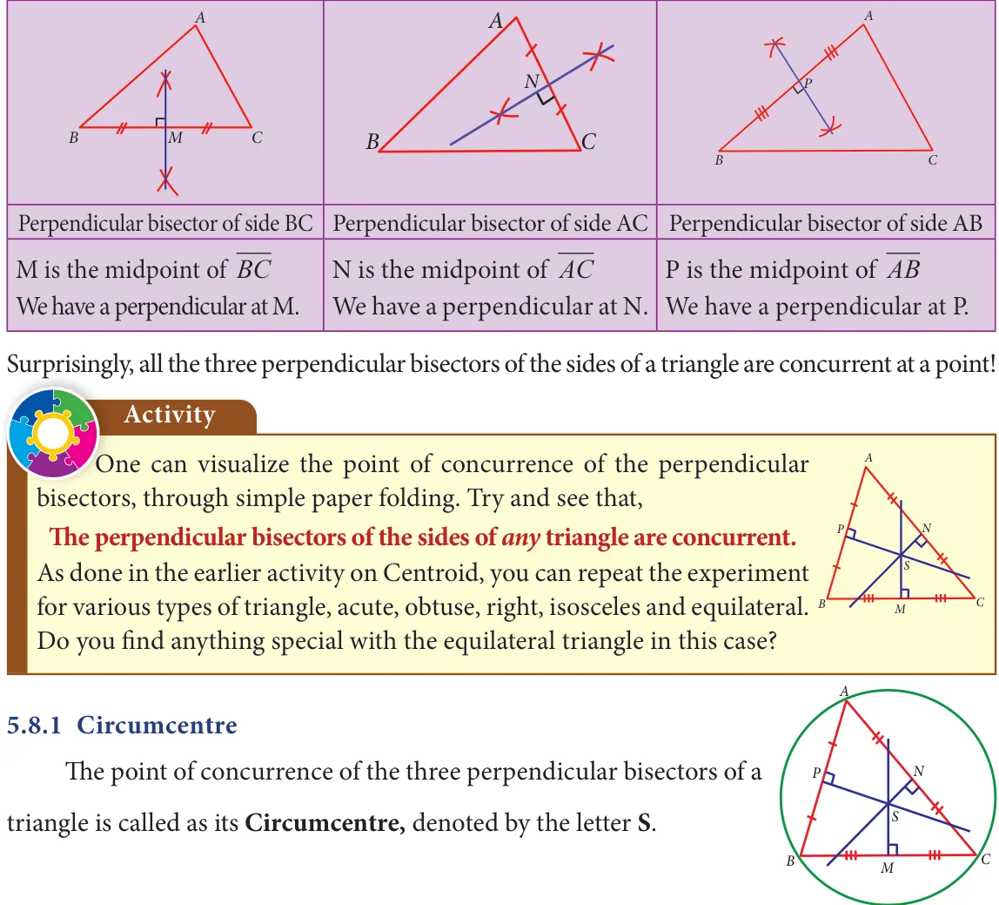
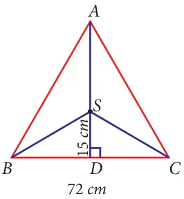
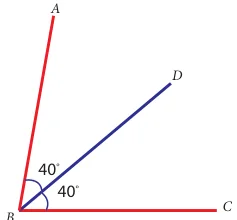

Let us first recall the following ideas.

Consider a triangle ABC. It has three sides. For each side you can have a perpendicular bisector as follows:

Why should it be called so? Because one can draw a circle exactly passing through the three vertices of the triangle, with centre at the point of concurrence of the perpendicular bisectors of sides. Thus, the circumcentre is equidistant from the vertices of the triangle.
Activity
Check if the following are true by paper-folding:
- 1.The circumcentre of an acute angled triangle lies in the interior of the triangle.
- 2.The circumcentre of an obtuse angled triangle lies in the exterior of the triangle.
- 3.The circumcentre of a right triangle lies at the midpoint of its hypotenuse.
Example 5.19

In DABC, S is the circumcentre, \(BC = 72\) cm and \(DS = 15\) cm. Find the radius of its circumcircle.
Solution:
As S is the circumcentre of \(\triangle ABC\), it is equidistant from A,B and C. So AS=BS=CS=radius of its circumcircle. As AD is the perpendicular bisector of BC, \(BD = \times BC= \times 72 = 36\) cm
\(\frac{11}{22}\) Fig. 5.36
In right angled triangle BDS, by Pythagoras theorem,
\(BS = BD +SD = 36 + 15 = 1521 = 39\) ÞBS \(= 39cm\).
\The radius of the circumcircle of DABC is 39 cm.
